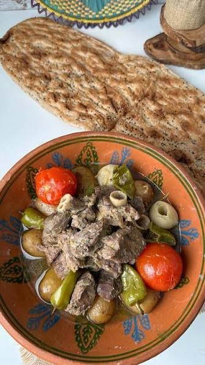

Rosh
Description
Home

Rosh (also known as Namkeen Gosht) is the ultimate Pashtun comfort food and a true staple of Swat Valley cuisine. Unlike heavy curries, Rosh is a celebration of simplicity. It consists of tender chunks of lamb or beef slow-cooked in their own fat with just tomatoes, green chilies, and salt. The dish relies entirely on the high quality of the meat and the slow cooking process to create a rich, savory, and deeply satisfying flavor. It is traditionally served with hot naan bread.
Ingredients
- 1 kg lamb or beef
- 3 to 4 medium tomatoes
- 3 to 4 chopped green chilies
- Half a cup animal fat
- 1 tbsp salt
- 3 cups water
- In a large, heavy-bottomed pot, heat the oil or animal fat over medium-high heat.
- Add the meat chunks and fry them for about 5 to 7 minutes until they are browned on the outside.
- Add the salt and pour in the water. Bring it to a boil, then reduce the heat to low, cover the pot, and let it simmer.
- Allow the meat to slow-cook for 1 to 1.5 hours until it becomes completely tender and falls off the bone.
- Once the meat is tender, add the chopped tomatoes and green chilies directly into the pot.
- Increase the heat slightly and cook uncovered for another 15 to 20 minutes, allowing the tomatoes to break down into a thick gravy and the oil to separate to the top.
- Taste and adjust the salt if needed. Serve hot with fresh naan bread and a side of salad.